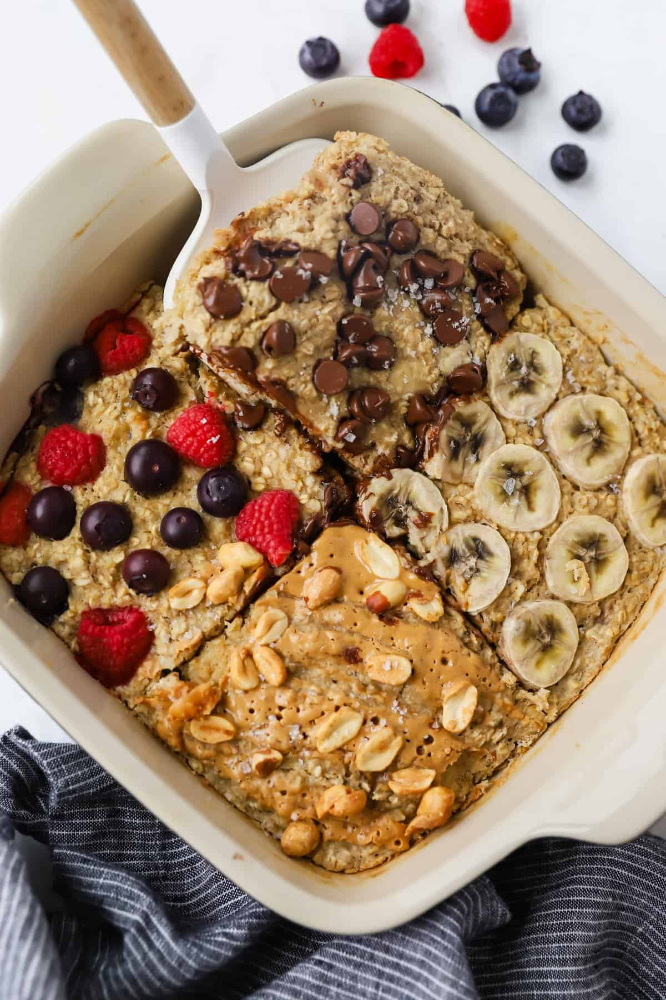

Baked Oats Recipe
Home

These protein baked oats are such a simple way to pack in a ton of nutrient into your breakfast. They’re loaded with protein (of course) with almost 20 grams per serving, lots of fiber and healthy fats.
Ingredients
- Oats
- Protein Powder
- Banana
- Egg
- Milk
- Maple Syrup
Steps
- Add all ingredients aside from the oats and mix ins (chocolate chips, blueberries etc) to a blender. Blend until smooth.
- Add in the oats and pulse to combine. I personally don't like the oats fully blended into the mixture, but you can do this if you prefer.
- Transfer to a small baking dish and fold in your desired mix ins.
- Bake for 25-30 minutes or until a toothpick comes out clean.
- I like to top the chocolate chip version with banana and flakey salt, the blueberry with chopped walnuts and honey and the strawberry with more fresh strawberries and yogurt.
Home